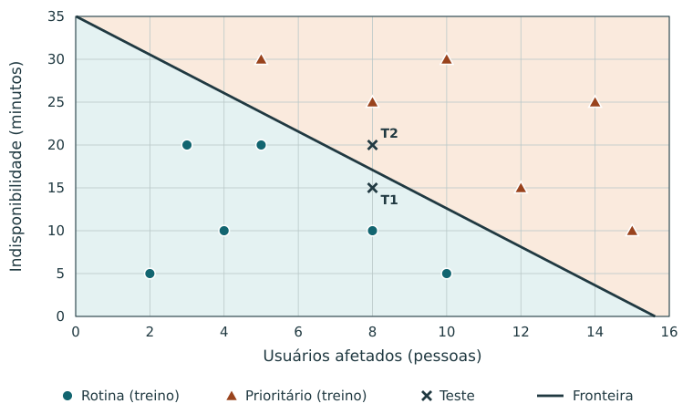

ATIVIDADE PRÁTICA · TEMA 2
Classificador linear simples para reconhecimento de padrões
Leonardo Cordeiro da Silva
SP3301699
SPOMVAL · Vetores, Geometria Analítica e Álgebra Linear
Profa. Josceli
1 · APLICAÇÃO
Quando um sistema de laboratório fica indisponível, a equipe de TI precisa decidir se o incidente pode seguir na fila de rotina ou se exige atendimento prioritário. Este projeto usa duas informações disponíveis no momento da triagem para sugerir a fila de um novo chamado.
O processo de gestão de incidentes do Instituto Federal do Tocantins considera o número de usuários afetados ao avaliar o impacto e combina impacto e urgência na priorização [1]. No protótipo, a contagem de usuários representa o alcance da falha. Os minutos já transcorridos representam a duração observada até a triagem.
Cada chamado corresponde a um ponto x = (u, t). A primeira coordenada conta as pessoas afetadas e a segunda mede os minutos de indisponibilidade. O rótulo −1 mantém o chamado na fila de rotina. O rótulo +1 o encaminha para atendimento prioritário.
Os 12 cenários do arquivo treino.csv são simulados. Cada um recebeu um rótulo antes do ajuste. Há seis registros em cada classe.
| Rotina (−1) | Prioritário (+1) | ||
|---|---|---|---|
| Usuários | Minutos | Usuários | Minutos |
| 2 | 5 | 5 | 30 |
| 4 | 10 | 8 | 25 |
| 8 | 10 | 12 | 15 |
| 10 | 5 | 15 | 10 |
| 3 | 20 | 10 | 30 |
| 5 | 20 | 14 | 25 |
Aos 10 minutos, o chamado de quatro usuários está na fila de rotina e o de 15 usuários tem prioridade. Para cinco usuários, a própria tabela registra decisões diferentes aos 20 e aos 30 minutos. Esses pares ajudam a entender por que o modelo precisa das duas coordenadas.
2 · FUNDAMENTAÇÃO E AJUSTE
Seja w = (wu, wt) o vetor de pesos. O produto interno com x = (u, t) soma as contribuições das duas coordenadas. O intercepto b desloca a fronteira no plano [2] [3].
Para w diferente do vetor nulo, os pontos que satisfazem s = 0 formam um hiperplano, que em duas dimensões é uma reta. Se dois pontos estão nessa reta, a diferença entre seus escores é zero. Assim, o deslocamento entre eles é perpendicular a w. O sinal de s identifica o semiplano. A regra atribui +1 para s ≥ 0 e −1 para s < 0 [4].
A matriz X tem 12 linhas da forma (1, ui, ti). O vetor y contém os rótulos e θ agrupa o intercepto e os dois pesos. Mínimos quadrados escolhe θ para minimizar a soma dos quadrados das diferenças entre os escores e os rótulos.
No mínimo, o resíduo y − Xθ é ortogonal às colunas de X. Isso dá as equações normais (XTX)θ = XTy [2] [3]. Para os dados da Tabela 1, o sistema é
A entrada 96 soma os usuários dos 12 chamados. O termo 32, no lado direito, é a soma de usuários nos prioritários menos a soma nos de rotina. O determinante da matriz é 2.248.500, portanto o sistema tem uma solução única. O escalonamento fornece o escore exato
No chamado (5, 20), as contribuições ao numerador são 16.550 pelos usuários e 29.520 pelo tempo. Subtraindo 51.695 dessa soma, restam −5.625. O escore é aproximadamente −0,2502, valor que encaminha o chamado para a fila de rotina.
3 · RESULTADOS
Igualando o escore a zero, obtém-se a fronteira t ≈ 35,0237 − 2,2425u. Para cada pessoa adicional afetada, o tempo necessário para atingir a fronteira diminui em cerca de 2 minutos e 15 segundos nesta base.

Ao fixar u = 8, a reta cruza a vertical em t = 205/12 minutos, ou 17 minutos e 5 segundos. T1 fica abaixo do corte e T2 fica acima. Um chamado exatamente no corte recebe prioridade, conforme a regra de desempate.
O modelo acertou os 12 rótulos de treino, mas a soma dos erros quadráticos foi 3,022459. Por exemplo, o chamado (2, 5) recebeu escore aproximado de −1,6765. O sinal acerta a classe de rotina e a diferença para −1 entra no erro. O escore pode ultrapassar o intervalo de −1 a +1.
Os 12 acertos descrevem o ajuste aos exemplos simulados. Uma avaliação operacional exigiria chamados reais de outro período, rotulados pela equipe. Uma falha durante uma prova, por exemplo, pode exigir prioridade mesmo com poucos usuários afetados. A criticidade do serviço é uma informação que este modelo de duas variáveis deixa de observar.
4 · IMPLEMENTAÇÃO E TESTES
Na pasta do projeto, execute os comandos abaixo com Python 3. O primeiro ajusta o modelo, classifica os dois chamados e grava decisao.svg. O segundo verifica as previsões automaticamente.
python classificador.py --ponto 8 15 --ponto 8 20 python testes.py
modelo.py lê o CSV, acumula os produtos de cada linha e resolve o sistema 3 × 3 por eliminação de Gauss com pivoteamento parcial e substituição regressiva. As frações preservam a igualdade exata na fronteira. grafico.py encontra os cruzamentos da reta com as bordas do gráfico e pinta os dois semiplanos. Todo o programa usa a biblioteca padrão do Python.
Os pontos abaixo ficaram fora do treino. Os valores esperados vêm da substituição na fórmula exata da página 3. Os valores obtidos foram impressos pelo programa, com seis casas decimais.
| Caso | Entrada (usuários, min) | Saída esperada | Saída obtida |
|---|---|---|---|
| T1 | (8, 15) | −205/1499 · Rotina (−1) | −0,136758 · Rotina (−1) |
| T2 | (8, 20) | 287/1499 · Prioritário (+1) | +0,191461 · Prioritário (+1) |
Os cinco minutos adicionais elevaram o escore em 492/1499 (≈ 0,3282), o suficiente para atravessar a reta. Para consultar outros pontos pelo teclado, use python classificador.py --interativo. A opção --treino permite indicar outro CSV com o mesmo cabeçalho.
As seis verificações de testes.py passaram. Além de T1 e T2, o arquivo testa o empate na reta, uma fronteira vertical, pontos de treino colineares e quatro pontos com rótulos alternados nos cantos de um quadrado. Neste último caso, conhecido como XOR, o ajuste produz escore zero em todos os pontos. Uma única reta é insuficiente para separar as diagonais.